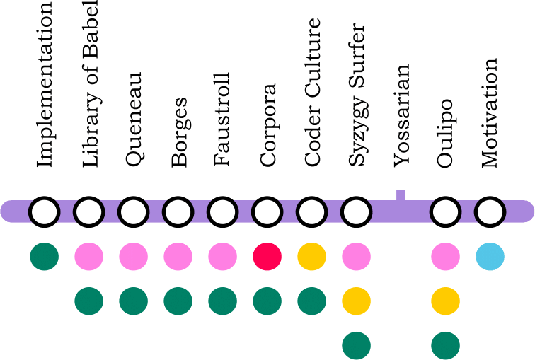

2 Inspirations
With bated breath and whisp’ring humbleness,they did perform beyond thought’s compass,I speak my thought,his throat that he hath breath’d in my dishonour here.The very source of it is stopp’d,it follows in his thought that I am he,she deceives me past though,he would kiss you twenty with a breath. Here’s my mother’s breath up and down,the breath no sooner left his father’s body,far be the thought of this from Henry’s heart.If her breath were as terrible as her terminations,here’s my mother’s breath up and down,thought is free.
This research was heavily influenced by a few major inspirations and this chapter introduces them all.
2.1 The Syzygy Surfer
This PhD project is directly based on the Syzygy Surfer (Hendler and Hugill 2011; Hendler and Hugill 2013). Hendler and Hugill suggest the use of three pataphysical principles, namely clinamen, syzygy and anomaly, to create a new type of web search engine reminiscent of the experience of surfing the web using semantic web technologies. This is in contrast to current web search engines which value relevant results over creative ones.
‘Surfing’ used to be a creative interaction between a user and the web of information on the Internet, but the regular use of modern search engines has changed our expectations of this sort of knowledge acquisition. It has drifted away from a learning process by exploring the web to a straightforward process of IR similar to looking up a word in a dictionary.
The ambiguity of experience is the hallmark of creativity, that is captured in the essence of pataphysics. Traversing the representations of this ambiguity using algorithms inspired by the syzygy, clinamen and anomaly of pataphysics, using a panalogical mechanism applied to metadata, should be able to humanize and even poeticize the experience of searching the Web.
(Hendler and Hugill 2013)
Their inspirations come from Borges (2000) (for the underlying poetic sense of unity), Jarry’s pataphysical principles (1996) and Minsky and Singh’s panalogies (parallel analogies—to introduce ambiguity, since it allows various descriptions of the same object) (2005).

My project has since moved on from the idea of using the semantic web to create the search tool and uses the concept of antinomy rather than anomaly as one of its three algorithms. One of my original ideas based on the Syzygy Surfer was to create a standard ontology of creativity using semantic web technologies. I quickly ran into the following problem though: the idea of standards is totally opposed to that of surprise - which plays a role in creativity. Pataphysics in particular is fond of breaking standards (e.g. exceptions, contradictions, etc.). But standards are a key building block of the semantic web. A common ontology of creativity might be useful in some cases but nevertheless contradicts the use of pataphysics.
2.2 Faustroll’s Library of Equivalent Books
The artefact created to demonstrate the search algorithms—pata.physics.wtf—uses two collections of texts rather than the open web as source material. One of these corpora is based on the fictional library of ‘equivalent books’ from Alfred Jarry’s Exploits and Opinions of Dr. Faustroll, \('\)Pataphysician (1996)
The library also contains three prints (a poster of Jane Avril by Toulouse-Lautrec, an advert for the Revue Blanche by Bonnard, and a portrait of Doctor Faustroll by Aubrey Beardsley) and a picture Saint Cado by the Oberthuer printing house of Rennes (Jarry 1996)1. It contains the following books.
BAUDELAIRE, a volume of E.A. POE translations.
BERGERAC, Works, volume II, containing the History of the States and Empires of the Sun, and the History of Birds.
The Gospel according to SAINT LUKE, in Greek.
BLOY, The Ungrateful Beggar.
COLERIDGE, The Rime of the ancient Mariner.
DARIEN, The Thief.
DESBORDES-VALMORE, The Oath of the Little Men.
ELSKAMP, Illuminated Designs.
An odd volume of the Plays of FLORIAN.
An odd volume of The Thousand and One Nights, in the GALLAND translation.
GRABBE, Scherz, Satire, Ironie und tiefere Bedeutung, comedy in three acts.
KAHN, The Tale of Gold and of Silence.
LAUTREAMONT, The Lays of Maldoror.
MAETERLINCK, Aglavaine and Selysette.
MALLARME, Verse and Prose.
MENDES, Gog.
The Odyssey, Teubner’s edition.
PELADAN, Babylon.
RABELAIS.
JEAN DE CHILRA, The Sexual Hour.
HENRI DE REGNIER, The Jasper Cane.
RIMBAUD, The Illuminations.
SCHWOB, The Childrens’ Crusade.
Ubu Roi.
VERLAINE, Wisdom.
VERHAEREN, The Hallucinated Landscapes.
VERNE, Voyage to the Center of the Earth.
2.3 100.000.000.000.000 Poems
The interface design of some of my search results is directly inspired by Raymond Queneau’s Cent Mille Milliards de Poèmes (1961), a prime example of Oulipian art. The book is essentially made up of 10 pages containing one sonnet each. Each page however is split into 14 thin strips, one for each line. This means that mathematically there are \(10^{14}\) possible poems to be read by combining different lines every time. My implementation of this resulted in a sonnet, each line of which can be changed individually using mouse clicks.
2.4 Celestial Emporium of Benevolent Knowledge
Jorge Luis Borges mentions a Chinese encyclopaedia called the ‘Celestial Emporium of Benevolent Knowledge’ in the short story The Analytical Language of John Wilkins (2000). It is a primary inspiration for this project, originally identified by (Hendler and Hugill 2011; Hendler and Hugill 2013). It lists the following results under the category of ‘animal’.
those that belong to the Emperor,
embalmed ones,
those that are trained,
suckling pigs,
mermaids,
fabulous ones,
stray dogs,
those included in the present classification,
those that tremble as if they were mad,
innumerable ones,
those drawn with a very fine camelhair brush,
others,
those that have just broken a flower vase,
those that from a long way off look like flies.
Although these are obviously all perfectly valid results, it is clear that they form a more creative, even poetic, view of what an animal might be than the Oxford English dictionary’s prosaic: “a living organism which feeds on organic matter” (2010). This poetic form of order or structure was a direct inspiration for the results generated by this project’s exploratory search tool pata.physics.wtf.
2.5 Metaphorical Search Engine Yossarian
Yossarian is a creative search engine which claims to return “diverse and unexpected results” (2015). Being a commercial product it is hard to find reliable details on precisely how their search engine works; the site seems well marketed but its functionality is shrouded in mystery.
Yossarian makes the process of generating new ideas faster, while also improving its quality. This creative search engine helps people discover new perspectives, conceptual directions, creative insights, and allowing collaboration and feedback from a creative global community.
(Yossarian 2015)
They also claim to be inspired by metaphors and that generating lateral connections can diversify users’ ideas and help understand conceptual relationships between things through a, what they call, ‘creative graph’.
The site started in a public alpha release in 2012. At the time, it consisted of simple image search. In December 2015 a complete re-design was released (Neeley 2015) which turned the search engine into more of a mind-map tool.
Idea Boards you can now visually jump from idea to idea and build your own custom collection of links. It’s a powerful new kind of mind map powered by search, and a radical departure from traditional search engine interfaces.
(Neeley 2015)
While they do boldly call themselves “the world’s first creative search engine” (Yossarian 2015) it is impossible to know how their algorithms really work. The recently released mind map functionality brings up those ‘lateral connections’ in a relationship graph form. There is a slider that lets users adjust how creative they want their results to be—from literal to lateral.
Tony Veale introduced a model, superficially similar to the Yossarian system, that allows users to formulate queries as creative metaphors using a what he calls ‘affective stereotype lexicon’ (2013) but he does not go into the evaluation of his model. The idea is that the search engine is capable of understanding metaphorical queries but not that it produces metaphoric results.
2.6 The Library of Babel
The Library of Babel is a short story by Jorge Luis Borges (1964). It envisions a universe, called ‘the Library’, which is composed of “an indefinite and perhaps infinite number of hexagonal galleries” containing every possible book ever conceived and not yet conceived.
The specific artefact of inspiration for my project is a website implementing a miniature form of this library (libraryofbabel.info) created by Jonathan Basile (2015). Instead of containing every single book possible, it contains every single page possible—which is, at 3200 characters per page and 29 possible characters, still a lot.
Basile claims to use a ‘pseudo-random number generating algorithm’ (combining modular arithmetic and bit-shifting operations) to produce all \(29^{3200}\) pages without needing to store anything on disk.
The pages of rational text which this algorithm can locate are rarer than a single grain of sand in that collection, yet intrinsically no more meaningful. […] One can find only text one has already written, and any attempt to find it in among other meaningful prose is certain to fail. The tantalizing promise of the universal library is the potential to discover what hasn’t been written, or what once was written and now is lost. But there is still no way for us to find what we don’t know how to look for. […] Nonetheless, the library contains its own sort of poetry and revelation, and even this disappointment can provide a moment of clarity.
(Basile 2015)
It is hard to say what exactly influenced my project most. I think the idea of computationally generating this massive library is fantastic—and absurd.
2.7 Oulipo
The OULIPO is a literary movement2 from the 1960’s, originating in France as a subcommittee of the “Collège de \('\)Pataphysique”. As such it has roots in pataphysics although it eventually separated and became a standalone group. Their main philosophy perhaps is to use constraints in order to enhance creative output. Some examples of techniques, taken from (Mathews and Brotchie 2005), invented and used by them are shown below (and many more can be seen in chapter 4, tables 4.1 and 4.2).
- N+7
Invented by Jean Lescure. It is sometimes called ‘S+7’. It’s a simple method of replacing each noun with the next seventh noun in a dictionary. For example: tree \(\rightarrow\) trend, shoreline \(\rightarrow\) shotgun3.
- Algol poetry
Algol (Algorithmic Oriented Language) is a programming language from 1960 which at the time consisted of only 24 words. It was used to write poetry given the restricted vocabulary of the language only (see example below in figure 2.3).
- Melting snowball
A technique by which each line in a text has one less character than the preceding one resulting in a structure as shown in figure 2.3.
- Paul Braffort
Paul Braffort wrote a program in 1975 to generate versions of Queneau’s 100 thousand million poems. It used the reader’s name and the time it took to write it to determine which poem to display. He did a similar thing with Italo Calvino to write a story that has a very large number of possible outcomes which can be reduced by the reader by making certain choices.
- Mathew’s algorithm
In the 1970’s Harry Mathews created this procedure of generating results. It is based on permutation of characters, words, symbols, numbers, etc. See figure 2.3.
[The use of computers] became an instrument, not of combinatorial accumulation, but of anti-combinatorial reduction. It served not to create combinations but to eliminate them.
(Mathews and Brotchie 2005)
Table
Begin: to make format,
go down to comment
while channel not false
(if not true). End.
Incontrovertible
sadomasochistic
orthographical
compositional
restrictions
insistently
discipline
grandiose
sixteens
initial
hubris
right
down
now
to
0
\(\begin{matrix} \text{T}&\text{I}&\text{N}&\text{E}\\ \text{S}&\text{A}&\text{L}&\text{E}\\ \text{M}&\text{A}&\text{L}&\text{E}\\ \text{V}&\text{I}&\text{N}&\text{E} \end{matrix}\)
\(\downarrow\)
\(\begin{matrix} \text{T}&\text{I}&\text{N}&\text{E}\\ \text{E}&\text{S}&\text{A}&\text{L}\\ \text{L}&\text{E}&\text{M}&\text{A}\\ \text{I}&\text{N}&\text{E}&\text{V} \end{matrix}\)
These techniques have endless applications in as many different disciplines. The use of constraints is now a well-known approach for creative activities and has many supporters.
2.8 Coder Culture
Whether you call it “programming culture”, “coding culture”, or “hacking culture”, it is clear that the topics shared are code and culture.
The programming language Python4 was used for the core system behind the pata.physics.wtf site. The so-called Zen of Python is a set of guidelines for good practice in programming originally defined by Guido van Rossum—the creator of Python—who is endeeringly known as the BDFL and put into the below form by Tim Peters. This set of principles is also known as PEP20. The abstract reads: “Long time Pythoneer Tim Peters succinctly channels the BDFL’s guiding principles for Python’s design into 20 aphorisms, only 19 of which have been written down” (2004).
Beautiful is better than ugly.
(Peters 2004)
Explicit is better than implicit.
Simple is better than complex.
Complex is better than complicated.
Flat is better than nested.
Sparse is better than dense.
Readability counts.
Special cases aren’t special enough to break the rules.
Although practicality beats purity.
Errors should never pass silently.
Unless explicitly silenced.
In the face of ambiguity, refuse the temptation to guess.
There should be one– and preferably only one –obvious way to do it.
Although that way may not be obvious at first unless you’re Dutch.
Now is better than never.
Although never is often better than *right* now.
If the implementation is hard to explain, it’s a bad idea.
If the implementation is easy to explain, it may be a good idea.
Namespaces are one honking great idea – let’s do more of those!
I cannot claim to have followed each and every one of those recommendations in my coding practice (although I have certainly tried) but it has been highly influential during the writing and design of this thesis.
The following list shows some other general programming culture references that have been inspirational in one way or another. They were interesting to me due to their underlying sense of humour which resembles that of pataphysics.
- Jargon File
a “comprehensive compendium of hacker slang illuminating many aspects of hackish tradition, folklore, and humor” (Raymond 2004)
- 1337
an Internet ‘language’ (Thrid 2002)
- Code Golf
“a competition to solve a particular problem in the fewest bytes of source code” (Programming Puzzles & Code Golf n.d.)
- Code Bowling
“a competition to solve a particular (usually simple) problem in the most bytes or complexity” (Code bowling. Programming Puzzles & Code Golf n.d.)
- IOCCC
a competition to “write the most obscure/obfuscated C program within the rules to show the importance of programming style, in an ironic way” (Broukhis et al. n.d.)
- Glitch Art
“Glitch art takes temporary pixelations, interruptions and glitches and turns them into visually arresting pieces, questioning the forms and traditions of art using digital techniques” (Wong 2013) (see also (Glitch art. Image search results 2016; Glitch_art. Subreddit n.d.))
- Easter Eggs
The practice of hiding a reproducible, personal, harmless and entertaining feature into a piece of software (Wolf and Wolf n.d.)
- Knuth
Donald Knuth has long maintained a tradition of (a) adding easter eggs to his books on programming and (b) rewarding people for finding errors and typos in his books with fictional currency (Knuth n.d.).
An example of creative code from the IOCCC is reproduced in source 2.4. It shows highly obfuscated C code “written in hommage to René Magritte’s picture La trahison des images (The Treachery of Images)” by Uri Goren in 2011. It won the ‘most artistic’ category of that year’s contest (Goren 2011).
2.9 From the Inspirations to Paris by Sea

The inspirations referenced in this chapter have influenced many aspects of this project. The Syzygy Surfer by Hendler and Hugill (2011; 2013) for instance forms the basis for all of the research covered in this thesis and is also mentioned in chapter , , and . The OULIPO is also covered in these chapters. These influences in general have already been introduced in the . Faustroll’s ‘library of equivalent books’ in Jarry’s novel The Exploits and Opinions of Dr. Faustroll, Pataphysician (1996) forms a key element in two main features of pata.physics.wtf, namely one of the two corpora (the other one being the Shakespeare corpus) introduced in section and the base text used in the clinamen algorithm (see section ) . The literary context for the novel, the character and library are discussed in chapter . The two corpora mentioned above are also further covered in the chapter, for example: comparing the search results produced by the two different corpora (see tables and and also section ), and changing the base text in the clinamen algorithm (section ).